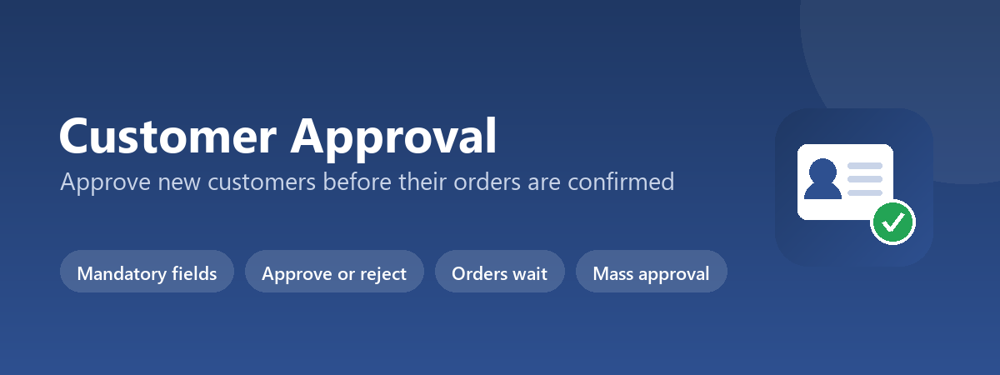

New customers are checked and approved before their quotations can be confirmed.
Switch it on in the Sales settings and choose the details a customer must have. A new customer starts as Draft, a salesperson sends it for approval, and an approver approves or rejects it. Until then, staff cannot confirm a quotation for that customer.
📝 Mandatory detailsChoose the fields a customer needs before approval, such as email, tax ID or payment terms; missing ones are listed by name. |
✅ Approve or rejectApprovers get an activity, decide with one click, and the colleague who asked is told the result. |
🚫 Orders waitStaff cannot confirm a quotation while its customer is not approved, and a banner on the order explains why. |
↩ Revoke approvalAn approver can take an approval back, which returns the customer and its contacts to Draft. |
🏢 Company and contactsApproval is held by the company, so its contact persons and addresses follow it automatically. |
📋 Work in bulkSend a selection for approval or approve many customers at once from the list; incomplete ones are skipped and reported. |
Odoo 18.0 • Community & Enterprise • depends on Sales • Licence LGPL-3
Odoo implementation and development. thecodelegion.com